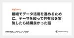

Adwaysエンジニアブログ のフィード

チームでペルソナに向き合うための３つのポイント 1
1
Adwaysエンジニアブログ
こんにちは！ デザイナーのさくらいです！ 春も近づき、梅の花のいい香りに癒されますね。 学生の方は就職だったり、業務でもチーム編成が変わったり変化の時期でもありますね。 今回は新しいチームの発足にもピ...
4日前

組織でデータ活用を進めるために、テーマを絞って共有会を実施したら結構良かった話 2
Adwaysエンジニアブログ
こんにちは、澤藤です 私自身はマネージャーとして、所属しているディビジョンで開発の質を良くしてスピード感を上げていくパフォーマンスUPに取り組んでいます その中でデータ基盤やデータ整備周りの案件やTi...
11日前

ADRならぬxDRであらゆる意思決定の記録をすぐに確認できるようにしている話
Adwaysエンジニアブログ
こんにちは、さたかです。今日は私が所属しているインフラ部署で実施している、Div技術向上というワーキンググループ（以下、WG）に関する記事の第2弾になります。 （第1弾はこちらです。） 今回は最近取り...
18日前
新卒エンジニアが一年目の業務を通してプロダクトやチームについて考えたこと
Adwaysエンジニアブログ
はじめまして、昨年4月に新卒で入社した上田と申します。今日は一年目の業務の振り返りを兼ねて、働く中でプロダクトやチームについて考えたことをまとめようと思います。 先輩社会人のみなさまからすれば何を当た...
25日前
Google Cloud Workflows でサーバレスなワークフローを構築したので概要を紹介
Adwaysエンジニアブログ
1 ヶ月ぶりに記事の場へ帰ってきました菊池です。 今回は前回の記事「データ基盤をサーバーレスで構築したので概要を紹介」で紹介したシステムで Workflows をどのように使っているのか、概要を紹介し...
1ヶ月前
なぜ崩したシステム設計が事業貢献、仮説検証のしやすさに繋がるのか？最近の事例から考える
Adwaysエンジニアブログ
こんにちは。まっちゃんです。前までは上流工程などで要件決めを携わることが多かったのですが、ここ半年で開発機会を増やしています。改めてレビューで多くの指摘をもらったり、設計思想の考え方、効率的な書き方な...
1ヶ月前
OKRを0から導入し個人OKRの運用に至るまでの2年間の変遷と課題への対処
Adwaysエンジニアブログ
こんにちは。インフラストラクチャーディビジョンでプレイングマネージャーしています奥村（＠arumuko) です。 今回は私が所属しているインフラストラクチャーディビジョンにOKRが存在しない状態から個...
2ヶ月前
社内向けプロダクトのフロントエンド構成のふりかえりとこれから(2022年1月版)
Adwaysエンジニアブログ
こんにちは。梅津です。 今回は社内向けプロダクトの開発で携わっているフロントエンドの現状や、これからやっていきたいことをお話します。 担当サービスの話 現在のチーム規模 エンジニア 3人 プロダクトオ...
2ヶ月前
いまさらですがSlackのワークフロービルダーでスプレッドシートを使う方法！
Adwaysエンジニアブログ
みなさん、こんにちは。藤間です！ 最近また社内で注目されているSlack！エンジニアチームでは以前から利用していますが、いまでは会社全体のコミュニケーションツールとして、いろいろな業務や部署でSlac...
2ヶ月前
たった2ヶ月半でSLOを導入して事業判断に影響を与えた話
Adwaysエンジニアブログ
こんにちは、広告サービスを担当している飛田です。 今回は "SLO導入で悩んでいる方" に向けて、弊社リワード広告サービスでのSLO策定の取り組みについてお話したいと思います。 そもそもSLOを策定す...
2ヶ月前
データ基盤をサーバーレスで構築したので概要を紹介
Adwaysエンジニアブログ
あけましておめでとうございます。本年もよろしくお願いいたします。 久しぶりに登場しました菊池です。 僕は昨年から新しいデータ基盤を構築するプロジェクトを担当しておりまして、最近システムが無事に実稼働し...
2ヶ月前
バグバウンティ一緒にやりません？
Adwaysエンジニアブログ
ご挨拶 皆様はじめまして。21新卒インフラストラクチャーディビジョンに配属されました田口と申します。 6月に配属されてからはGitLabの運用やクラウドのセキュリティ向上などの業務を行ってます。冬の寒...
3ヶ月前
ZIO再訪
Adwaysエンジニアブログ
前回、ZIOについて紹介した記事を書いてから半年以上も経ってしまいました。エンジニアの岡村です。 今回も引き続きZIOについて、特に並行処理に焦点を当てて紹介していきます。 前回の記事をまだ見ていない...
3ヶ月前
アドウェイズエンジニアブログ インセプションデッキ 「我々はなぜここにいるのか」
Adwaysエンジニアブログ
こんにちは、エンジニアブログ運営です。 今回はエンジニアブログを通して実現したいことの方向性を「インセプションデッキ」としてまとめました。 アドウェイズの開発組織のメンバー、社外の方にも読んで欲しい内...
3ヶ月前
自社のデータ分析基盤をSLOを用いてデータドリブンに品質向上
Adwaysエンジニアブログ
お久しぶりです!!! データエンジニアの大窄 直樹 (おおさこ)です. 今年も始まったかと思いきや, もう年末で驚いています. 年齢を重ねるにつれ, 光陰矢の如く1年が過ぎ去っていきますね(笑) それ...
3ヶ月前
デザイナー交流会をやってみた話
Adwaysエンジニアブログ
こんにちは！UI/UXデザイナーのさくらいです！もう12月、最近ではオンラインで忘年会も勉強会もできるので便利ですね！ 開催場所の確保に悩むことが減りました＾＾ さて、今回はアドウェイズと他2社のデザ...
3ヶ月前
AWSのテスト環境リソースを定期自動削除するようにした話
Adwaysエンジニアブログ
皆様こんにちは、インフラの中嶋です。 今回はAWSテスト環境のリソースを自動で削除する仕組みを作りましたのでそのお話となります。 背景 AWS環境で自由にリソースの作成・検証を行うことができる環境をA...
4ヶ月前
プロダクトマネジメントの民主化に向けて
Adwaysエンジニアブログ
こんばんは。 主戦場を組織マネジメントからプロダクトマネジメントに変えたりょーまです。 今回はプロダクトマネジメントに対して組織がどう向き合うべきか、今考えていることや戦略を書いてみようと思います。 ...
4ヶ月前
機械学習初学者が AutoGluon を利用して未来予測をしてみた話
Adwaysエンジニアブログ
こんにちは、三谷です。 普段は運用型広告向けプロダクト開発チームでエンジニアリングマネージャーをしています。 今回は機械学習初学者である私が AutoGluon を利用して未来予測した話を紹介したいと...
4ヶ月前
BIG-IPのアプライアンス版リプレースしてみた
Adwaysエンジニアブログ
挨拶 はじめまして、アドウェイズのインフラ部署に所属している久保です。今回は弊社オンプレミス環境のロードバランサー兼ファイアーウォール機器として利用しているBIG-IPをリプレースした話を書きたいと思...
4ヶ月前
プロダクト開発のロードマップや優先度付けでプロダクトマネージャー（PM,PdM）が利用する図の話
Adwaysエンジニアブログ
どうも、大曲です。赤ちゃんが生まれ、沐浴やおむつ替えをマスターしました！赤ちゃんを抱っこしながら、読書をするための足技も習得出来ました！ しかし、赤ちゃんが「魔の3週目」に入り泣き止まないため対応に日...
5ヶ月前
既存のGCPサービスをTerraform化 〜 CloudRun/CloudSchedulerのエラーをCloudFunctionsでSlackに通知
Adwaysエンジニアブログ
こんにちは、飯沼です。 以前、花田さんが悩みながら構築した「CloudRun/CloudSchedulerのエラーをSlackに通知するサービス」が無事リリースされ、運用が開始されました！ それまでは...
5ヶ月前
SlackとJiraを連携してタスクの自動登録してみたら超便利だった件
Adwaysエンジニアブログ
インフラの中嶋です。 最近、2回目のコロナワクチンの摂取が無事終わり安堵してます。 皆さんはいかがお過ごしでしょうか？ さて今回は社員からの問い合わせを自動的にタスク管理ツールJiraに登録するbot...
5ヶ月前
数値データのスケーリングの結果を比較してみた
Adwaysエンジニアブログ
こんにちは！ アドテクノロジーDivの安藤です。 以前はTerraformの記事を書かせて頂きました、2021年はロジックや機械学習を使って売り上げ最大化を目指し、チームで日々奮闘しております。 今回...
5ヶ月前
mswで快適モック生活
Adwaysエンジニアブログ
こんにちは。梅津です。 今回は msw(Mock Service Worker) に関する話です。 Kent C. Doddsが 自身のブログ や Epic React などで推していたのをきっかけに...
5ヶ月前
データセンターのコアスイッチをリプレースしました
Adwaysエンジニアブログ
はじめに 皆さんお久ぶりです。以前DirectConnectで記事を書かせて頂きました TK と申します。 直近で弊社のデータセンターでルーティングを行っているコアスイッチのリプレースを行いました。 ...
6ヶ月前
Scala3の新機能紹介
Adwaysエンジニアブログ
こんにちは、おかむです。開発開始から8年。28,000件のコミット、7400件のPR、4100件のClosed issue… 5/14に、とうとうScala3.0.0がリリースされました。 Scala...
6ヶ月前
アドウェイズのデータ分析基盤の現在地と課題
Adwaysエンジニアブログ
こんにちは、データ基盤チームの内田( [@ruchida13] )です データ基盤チームはアドウェイズの基幹事業である広告事業のデータを各媒体社様から頂きData Lakeに集積していく事、またDat...
6ヶ月前
社内ヘルプデスクチームに異動して取り組んでいること
Adwaysエンジニアブログ
みなさん、こんにちは。藤間です！ 最近体調を崩してダウンしていました。病院で診てもらい念のためPCR検査も行いましたが、食あたりと診断されました。もう大人だから、生活習慣を見直そうと思いましたまる(｀...
6ヶ月前
OKR設定フローをVSMでリードタイム改善！
Adwaysエンジニアブログ
こんにちは！府金です！ リモートワークも1年半と慣れと飽きを感じる中、デスクワークによる肩コリが悪化しました😋 レントゲンを撮ったら、完全にストレートネックでした。。 リモートワークも続きそうなの...
7ヶ月前